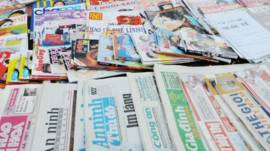

QUẢNG CÁO


Nga nói khủng bố khiến phi cơ Nga bị đâm
Nga nói khủng bố đã khiến chiếc phi cơ của Nga bị đâm ở Ai Cập hồi tháng 10 và giết hại tất cả 224 người trên máy bay.
17 tháng 11 2015
Thế giới
Phi cơ Nga:'bom trong khoang hành lý'
Nga nói chưa kết luận về vụ rới máy bay
Máy bay hàng không Nga 'rơi vì bom'?


Bóng đá: Tuyển Anh thắng Pháp 2-0
Tuyển Anh thắng Pháp 2-0 trên sân Wemblay nhời công của Alli ở phút 39 và Rooney ở phút 47, trong trận cầu diễn ra chirvaif ngày sau vụ khủng bố ở Paris.
5 giờ trước
Thế giới
Anh Pháp giao hữu: Trận thách thức khủng bố

Tham những, ma túy đông gấp bộ'đối lập'?
Bộ trưởng Công an Trần Đại Quang cho biết trong hơn ba năm qua, Bộ này xác định có 350 đối tượng 'lập hội chống đối'.
17 tháng 11 2015
Thế giới
Luật Báo chí VN là 'vũ khí phe bảo thủ'
Nhân sự và tư duy chính trị của Đảng
Charlie Sheen xác nhận nhiêm HIV
17 tháng 11 2015
Thế giới
Bắt nghi can vụ giết bà Hà Linh
17 tháng 11 2015
Thế giới
Úc nhận 5 người tỵ nạn Syria đầu tiên
17 tháng 11 2015
Thế giới
Tổng thống Pháp thề phá tan IS
17 tháng 11 2015
Thế giới
Cựu cán bộ an ninh bị tù vì Facebook
17 tháng 11 2015
Việt Nam
Sam Rainsy hoãn ngày về nước
17 tháng 11 2015
Thế giới
Anh-Pháp:'Không phải trận cầu thông thường'
17 tháng 11 2015
Thể thao
Nhiều bang Mỹ ngưng nhận tỵ nạn Syria
17 tháng 11 2015
Thế giới
Vietcombank ngưng dịch vụ ATM cho ngoại kiều
17 tháng 11 2015
Kinh tế
Nge/Xem

Đại biểu hỏi thủ tướng 'quá khó'
17 tháng 11 2015
Multimedia

Thủ tướng sẽ 'không đi ra ngoài đường lối'
17 tháng 11 2015
Multimedia

Tưởng niệm các nạn nhân Paris tại Hà Nội
17 tháng 11 2015
Multimedia

'Xả súng' ở rạp hát Bataclan,Pais
17 tháng 11 2015
Multimedia

Cảnh sát giải cứu con tin ở Pais
17 tháng 11 2015
Multimedia

Paris sau các vụ tấn công tối 13/11/2015
17 tháng 11 2015
Multimedia
Điểm nhấn
IS là gì và nguy hiểm tới đâu?
BBC Tiếng việt điểm lại các quan điểm đánh giá ý thức hệ,thực lực quân sự của Nhà nước Hồi giáo.
17 tháng 11 2015
Thế giới

Quan điểm
Nhiều người Hồi giáo 'đã khóc' trước Bataclan
nhà báo tự do Phạm Cao Phong nói nhiều người Hồi giáo đã thực sự khóc và hát La Marseillaise ở nơi sảy ra khủng bố Paris
15 tháng 11 2015
Kinh tế

Cổ phiếu du lịch giảm vì tấn công Paris
Cổ phiếu của các hãng hàng không du lịch của châu Âu bị giảm mạnh vào thứ Hai vì nhà đầu tư lo lắng về ảnh hưởng của các cuộc tấn công ở Paris
17 tháng 11 2015
Thể thao

Anh Pháp giao hữu: trận thách thức khủng bố
Tuyển Pháp sẽ đến Anh với một thông điệp của sự đề kháng sau vụ tấn công đẫm máu.
17 tháng 11 2015
Xã hội

Dấu ấn Mao: Từ Hồng vệ binh tới ông Tập
Bộ đồ đặc trưng thời Cách mạng Văn hóa được kẻ xấu trong phim phương Tây ưa dùng,và cũng là lựa chọn ưa thích của Chủ tịch TQ.
13 tháng 11 2015
Học tiếng Anh

Máy bay Nga bị rớt tại Sinai,Ai Cập
Viên chức hàng không Nga loại bỏ lỗi ký thuật hay lỗi máy bay tại Sinai,Ai Cập.
13 tháng 11 2015
Hình Ảnh

Giải Ảnh CGAP 2015
Tác giả VN là trong số đoạt giải cuộc thi ảnh CGAP nhằm cho thấy cuộc sống người nghèo được cải thiện qua các dịch vụ tài chính

Ảnh dự thi National Geographic
Một số bức ảnh tham gia dự thi cuộc thi National Geographic 2015 với các chủ đề Con Người, Nơi chốn và Thiên nhiên.
Góc nhìn chuyên mục

Bí ẩn nhữ chuyến tàu ma ở Anh
QUẢNG CÁO

Đài Loan, Tây Tạng và những quốc gia không tồn tại

Nghi phạm chính vụ Paris: Abdelhamid Abaaoud

Việt Nam:'Người tham những xử lý người chống'

Nhà nước Hồi giáo thay đổi chiến thuật

K-9 là gì và Việt Tân ứng xử ra sao?

Dùng vũ lực sẽ gặp cách mạng từ dưới lên?
Luật Báo chí VN là 'vũ khí phebảo thủ'

'Côn đồ đánh chứ không phải công an'
Một chút quyền lợi có lung lạc được bạn
Đọc nhiều nhất
- Việt Nam:'Người tham nhũng xử lý người chống'
- Tham những,ma túy đông gấp bội 'đối lập'?
- Cứu cán bộ an ninh bị tù vì Facebook
- Bắt nghi can giết bà Hà Linh
- Thủ tướng và cái giá của sự 'ngạo mạn'
- Nga nói khủng bố khiến phi cơ Nga bị đâm
- IS là gì và nguy hiểm tới đâu
- Charlie Sheen xác nhận nhiễm HIV
- Bí ẩn những chuyến tàu mà ở Anh
- Bóng đá :Tuyển Anh thắng Pháp 2-0
BBC Tiếng Việt trên mạng
- Youtube
- Google+
Các dịch vụ
- RSS